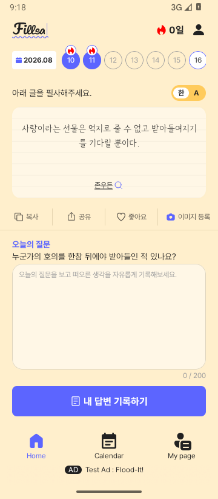
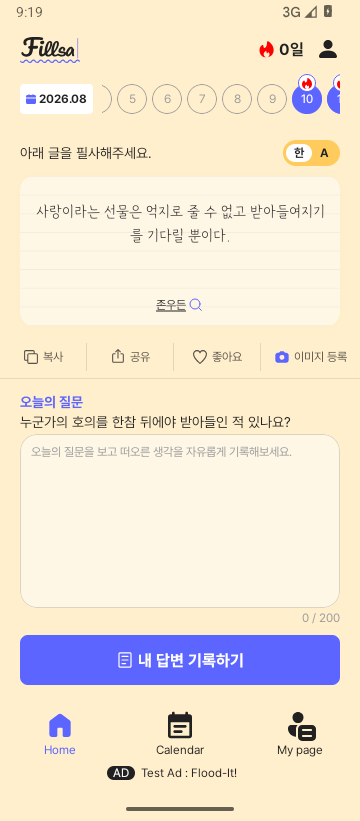

Home > 날짜 영역 > 스크롤 필요
Notion 원본 이슈
원문 속성: Status Not started · Priority 중간 · Device iOS, Android · 화면 Home · Category 기능. 이번 작업은 Android 범위다.
페이지 본문 블록 0건(빈 본문). 요구는 댓글과 Figma 주석에 있다.
페이지 본문 첨부 없음. 댓글 첨부는 아래에 보존했다.
Notion 댓글
문제와 재현 조건
Figma 날짜 줄 3204:2435의 주석은 10–16의 7일을 한 번에 표시하고 오늘을 오른쪽 끝에 두며, 과거 기록을 좌우로 탐색하도록 한다. 기존 Android는 7칸 Row라 손가락 드래그에 반응하지 않았다. 월 카드와 명언은 탐색 중 유지하고 날짜 탭에서만 선택을 바꾼다.
이슈 원인
HomeWeekStrip은 7개 날짜를 일반 Row에 그렸고 HomeView는 선택 주간만 전달했다. 회원 완료 정보도 선택된 HomeMemberQuoteWindow에만 연결되어 있었다.
해결방법과 실제 수정
FigmaHomeContent.kt의 날짜 칩을 LazyRow로 재사용한다. HomeView.kt는 서비스 시작일~서버 오늘의 날짜와 캐시된 완료 상태를 전달한다. HomeViewModel.kt와 HomeMemberQuoteWindow.kt는 보이는 과거 주간을 기존 weekly API로 읽어 캐시에만 보관한다. Action.kt에 탐색 이벤트를 추가했다. 표시 범위가 180ms 안정된 뒤 조회해 빠른 드래그 중 요청을 줄인다. 늦은 응답은 이미 채운 최신 캐시를 덮지 않는다. 스크롤 중 선택 명언·질문은 유지된다. 실패 시 확인되지 않은 완료 배지는 표시하지 않는다.
수정 전 · 목표 기준 · 수정 후
AS-IS · 수정 전 실제 결과

Figma · 목표 기준

TO-BE · 수정 후 실제 결과


검증 결과
| 검증 항목 | 실행 명령·절차·시각 | 실제 결과 | 증거 |
|---|---|---|---|
| 빌드·단위 테스트 | ./gradlew :app:assembleDebug :presentation:testDebugUnitTest | Pass | BUILD SUCCESSFUL |
| 회원 API 캐시 성공/실패 | HomeViewModelIntegrationTest | 선택 유지, 완료 배지 캐시, 실패 시 기존 표시 보존 | QA 기록 |
| 날짜 줄 Preview | android preview render :presentation --component-tree | Light/Dark 7칸 초기 상태 확인 | 이미지·tree |
| 실제 앱 제스처 | API 35 에뮬레이터 날짜 줄 좌우 드래그·탭 | 4–11 탐색, 10 선택, 10–16 복귀 | 스크롤 · 선택 · 복귀 |


UI QA 판정
Round 1: 날짜 줄 Light/Dark Preview를 먼저 확인하고 Home 조립 Preview, 같은 360×821의 실제 앱 전체 프레임을 Figma와 비교했다. 날짜 줄의 크기·초기 배치·완료 배지·스크롤 동작은 목표에 맞다. 전체 화면에는 기존 상단 streak 0일/목표 100일, live 광고/placeholder, OS 영역 등 차이가 남는다. 날짜 줄은 통과, 전체 조립 화면 최종 Pass는 보류다.
남은 항목과 다음 행동
실계정의 추가 weekly API 호출은 통합 테스트로만 검증했다. 실제 서버 성공/실패와 전체 Home Figma 차이는 후속 검증이 필요하다. 이번 Android 작업만으로 iOS나 Notion 상태를 변경하지 않았다.